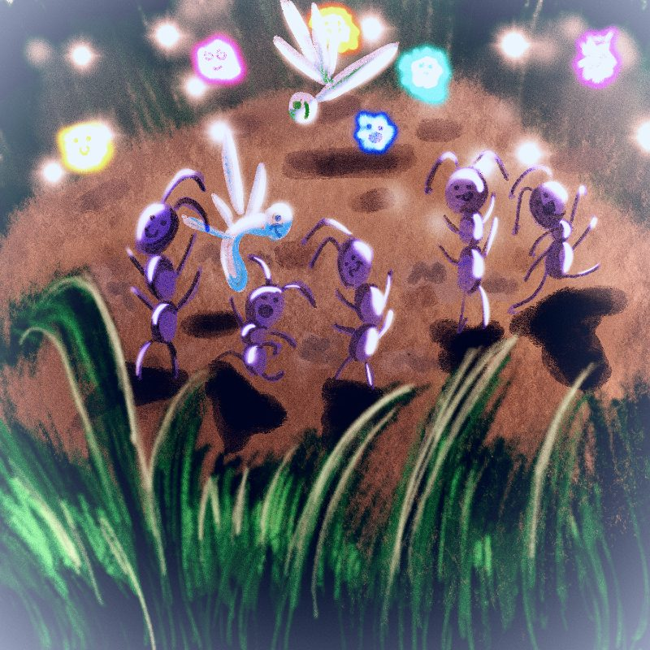

Creacover 2019 : J19
Publié le 01/02/2019 dans Dessin.
La musique du jour est Juchu de DVA.
Cette musique est trop rigolote. Elle m'a tout de suite permis d'imaginer des insectes qui font la fête, qui s'éclatent, rient, dansent, avec des moufs-moufs qui brillent au-dessus du dance floor comme dans une vraie party. Je voyais des couleurs vives, des énormes brins d'herbe et des insectes joyeux, déhanchés. Tadam ! Voici la fête des fourmis.

Il reste encore 11 dessins à réaliser, 11 jours de défi. Dieu que c'est long… Je n'en peux plus de cette discipline drastique. Si je devais participer de nouveau à un défi de ce type, je crois que je me limiterais à 15 dessins sur 30 jours, sans rythme imposé. Si je veux en faire 2 le même jour ou sauter des jours, grand bien me fasse ^^.